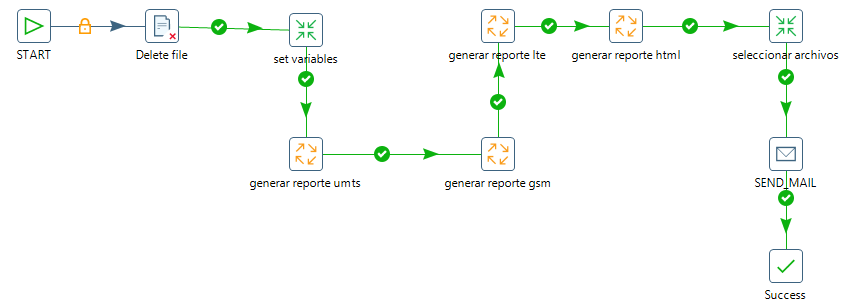
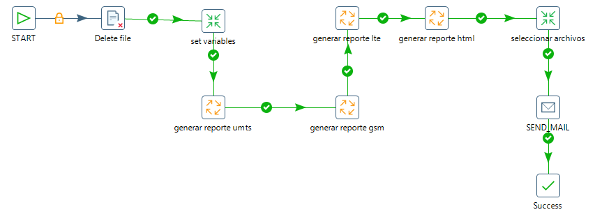

VOICEMAIL ZTE¶
1. OBJETIVO¶
El presente documento buscar explicar y detallar el proceso que genera Voice Mail ZTE
2. ALCANCE¶
Áreas involucradas: Performance de Red
3. DEFINICIONES¶
- Perdido: Servidor UNIX en donde se importan los XML desde el proveedor, y en donde se encuentra Smart. El nombre es perdido.claro.amx y la dirección ip física es 10.92.50.83
4. DESCRIPCIÓN GENERAL¶
VOICEMAIL ZTE
La plataforma Voicemail ZTE brinda el servicio de terminación de llamadas para cada usuario, actuando como contestador automático.
Como funciones adicionales a la de guardar mensajes de voz, brinda notificación por SMS de llamadas perdidas.
Y servicio de cliente visual de Correo de Voz a terminales iPhone.
5. DESCRIPCIÓN DETALLADA¶
5.1. Datos Origen¶
Server Origen y Path: 10.105.146.49, /home/sybase/zxinstat/data/usermailbox/report
Cantidad de archivos origen: 5 archivos
o Calling Traffic_20160901060010562.csv,
o Mailbox Count_20160901060010764.csv,
o Guest Deposit Message_20160901060011710.csv,
o Mailbox provisioning_20160901060011558.csv,
o MCA Forward Reason_20160901060010784.csv,
o Retrieve Message_20160902060013464.csv
Frecuencia actualización: Diario (se ejecuta una vez al dia a las 8 a.m )
Tipo de Archivo: CSV
5.2. Datos Destino¶
Server Destino: Perdido
Conversión de Archivos: Si
Tabla Files: No
Tabla Auxiliar: No
Frecuencia de corrida del proceso: cada 24 hs
Regionales: No
RAW Si/No: Si
Hour Si/No: Si
Day Si/No: Si
BH Si/No: Si
ISABH Si/No: Si
Países: Argentina, Uruguay, Paraguay
Directorio Destino (File System):
o /calidad/sva/zte/hourly/sva_zte_hour.sh
o /calidad/sva/zte/summary/sva_zte_summary.sh
5.3. Shell Copiar Archivos Origen a Destino y limpieza de los mismos¶
Los scripts son los siguientes:
5.4. Listado de tablas utilizadas¶
Las tablas utilizadas son las siguientes:
- SVA_ZTE_TRAFFIC_DAY
- SVA_ZTE_TRAFFIC_HOUR
- SVA_ZTE_MCA_FWD_BH
- SVA_ZTE_MCA_FWD_HOUR
- SVA_ZTE_MCA_FWD_DAY
- SVA_ZTE_MCA_FWD_HOUR
- SVA_ZTE_DEPOSIT_MESSAGE_BH
- SVA_ZTE_DEPOSIT_MESSAGE_HOUR
- SVA_ZTE_DEPOSIT_MESSAGE_DAY
- SVA_ZTE_DEPOSIT_MESSAGE_HOUR
- SVA_ZTE_RETRIEVE_MESSAGE_BH
- SVA_ZTE_RETRIEVE_MESSAGE_HOUR
- SVA_ZTE_RETRIEVE_MESSAGE_DAY
- SVA_ZTE_PROVISIONING_DAY
- SVA_ZTE_PROVISIONING_HOUR
- SVA_ZTE_PROVISIONING_BH
Estas tablas se obtienen de las siguientes queries:
6.REPROCESO¶
Se generó un script aparte de recupero, en el cual se ingresa como argumento la semana que se desee reprocesar:

Ejemplo:
En este ejemplo se reprocesa a 2 semanas atrás. Encargándose el script de definir la fecha desde y la fecha hasta.
Script de reproceso: sva_zte_summary_rec
 
